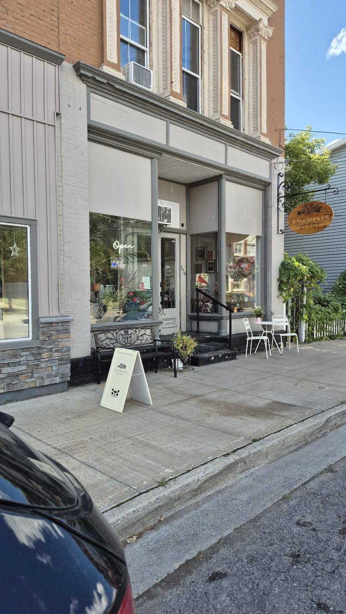
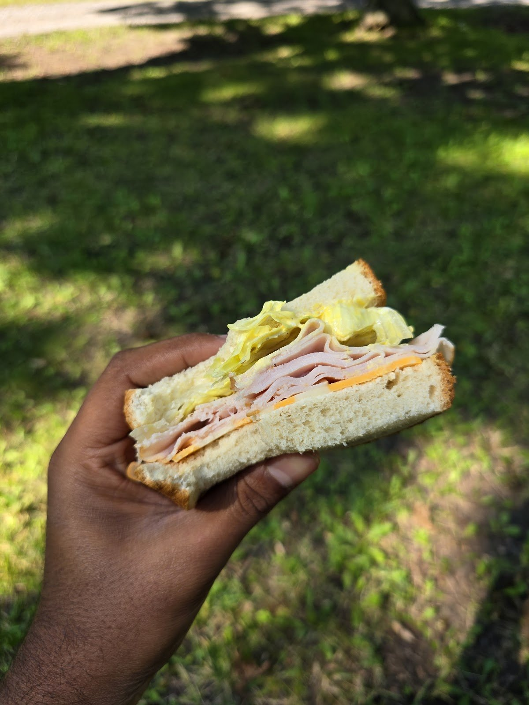

The curry apple chicken sandwich
“Quite literally the best sandwich I had ever had.” Sandwiches and wraps (corned beef, ham Dijon) come up in almost every review.
Source: Pixaley and an Apr 2025 reviewer, Google
Café · bakery · lunch · Deseronto
A cozy little café in the heart of Deseronto, with sandwiches, soups and pastries made in-house, and an owner who’s usually behind the counter.
The line in quotes on Google: “A cozy country Coffee Shop offering strong coffee, tasty treats, meals, and more!”

370 Main St
Off the menu
“The owner went above and beyond to make me the most delicious off menu sandwich.”
Google review via exa.ai copy of the listing, June 2025
“The owner is sweet and charming and usually on site serving and conversing with patrons.” Shawna Dent, Google
Photos
Photos from the café’s Google listing, including ones customers posted with their reviews. Tap to enlarge.
Reviews
4.9 ★ from 43 Google reviews (checked Oct 31, 2026). Quotes are word for word; “…” marks a trim. Named reviews were read on Google directly. “Via exa.ai copy” means a public copy of the Google listing that doesn’t show reviewer names.
★★★★★
“OH MY STARS! That coffee and that sandwich... We'll be back! First *but not last* time visiting. This is a fabulous find! … I grabbed a curry apple chicken sandwich … and called to tell Magnolias that it was quite literally the best sandwich I had ever had. WOW.”
★★★★★
“Wonderful things come in small packages. First time visitor to the shop was a great experience. The gluten free apple cinnamon bread was sooo delicious. My son and brother liked the cookies and my partner loved the brownies (those items were not gluten free). I am grateful they offered a gluten free option to me. Will return ASAP. Good thing I live around the corner. Yummy 😋”
★★★★★
“What a beautiful little spot in the heart of Deseronto. The BEST Apple cider donut I have ever tasted. MMMMM so good!!! Stop in, stay a while.”
★★★★★
“Absolutely love this place, it has been a regular lunch treat for us since opening. Amazing sandwiches, pastries and soups - all made in-house. The sandwiches are a frequent craving of mine. The owner and staff are always lovely. It’s been nice to see this cafe grow. The fridge with grab n go snacks is a nice addition as well.”
★★★★★
“The owner is sweet and charming and usually on site serving and conversing with patrons. Fantastic sandwiches and coffee!”
★★★★★
“Great coffee and great sandwiches 🥪! Staff is just lovely and it shows they love what they’re doing.”
★★★★★
“Absolutely wonderful experience today at Magnolias and highly recommend everyone stops in to try them out! I was looking for a sandwich today, but don't eat meat so can sometimes find it challenging to get things on the go. The owner went above and beyond to make me the most delicious off menu sandwich. I work in the area and am thrilled to have found such a great little shop to come back to often!😊”
★★★★★
“A warm and cosy café with an equally warm & kind host, serving delicious baked treats, sandwiches & freshly brewed coffee. Will surely visit again!”
★★★★★
“Grabbed some to go items for lunch today and it was awesome! We got the corned beef and ham Dijon wraps, as well as the deviled egg pasta salad and a cheese bread loaf. Atmosphere was lovely, service was great and food was delicious! Looking forward to making this a regular treat for lunch!”
Hours from the Google listing (checked Oct 31, 2026). One directory (Restaurant Guru) lists Sunday 12–4 p.m.; Google and other copies say closed Sunday, so call ahead on weekends.
370 Main St
Deseronto, ON K0K 1X0
On Main Street in downtown Deseronto.
This phone number isn’t on the Google listing. It comes from public directories (Rural Routes Ontario, Restaurant Guru and an exa.ai copy of the listing).
No website is published. Email and Facebook details exist but aren’t shown here.